Blog
Dispatch
News, education, and updates from the team.
-
Spring Cleaning Your Cannabis Gear: A Device-by-Device Guide
Resin dulls flavor and makes every hit harsher. Here is how to deep-clean bongs, pipes, rigs, vapes and grinders, with a supply list and a simple schedule.
Read More -
Canna-Oil (Quick Kief or Flower Infusion)
Kief takes a shorter steep than flower here, skips the straining and tastes cleaner, which makes it a natural match for olive oil you drizzle. Flower directions included.
Read More -
Indica, Sativa or Hybrid? What Those Labels Can and Can't Tell You
Where the indica and sativa labels come from, what they can and can't tell you, and a better way to choose using terpenes, cannabinoids and dose.
Read More -
Lamb Meatballs in a Cannabutter Chile Sauce (Albóndigas de Cordero)
Lamb meatballs spiced with toasted ancho, guajillo, anise and cinnamon, simmered in a red sauce that is finished with cannabutter and served in equal ladles.
Read More -
CBC, the Lesser-Known Cannabinoid: What It Is and What Research Says
CBC is a non-intoxicating cannabinoid found in small amounts in most cannabis. Here's how the plant makes it, what lab studies explore, and how to spot it on a lab report.
Read More -
Canna-Berry Freezer Jam with Raspberries
A bright raspberry jam that doubles as an easy-to-portion edible: the infusion goes in after cooking, so the math per tablespoon stays simple.
Read More -
Cannabis Strains Worth Knowing in 2026, and How to Choose One
The strains and strain families worth knowing in 2026, built from public strain records instead of sales data, plus a simple way to choose one.
Read More -
A Fruitcake-Spiced Canna-Cocktail Without the Booze
Black tea, cranberry and berry preserves with orange peel and warm spice: an alcohol-free holiday glass with a measured THC tincture shaken in.
Read More -
The Munchies Explained, Plus Terpene-Inspired Snack Pairings
The munchies have a real basis in brain science. Here is what research shows, what it does not, and a terpene-inspired snack menu to plan ahead with.
Read More -
A Self-Serve Citrus Mimosa Bar with THC Tinctures
Juices on ice, alcohol-free bubbles and labeled tincture bottles with dose cards: a brunch bar where every guest builds and doses their own glass.
Read More -
Marijuana and Sex: Research, Dosing and Communication
Some adults say cannabis changes their intimate life, for better or worse. Here is what studies actually found, why dose matters, and how to explore with consent and care.
Read More -
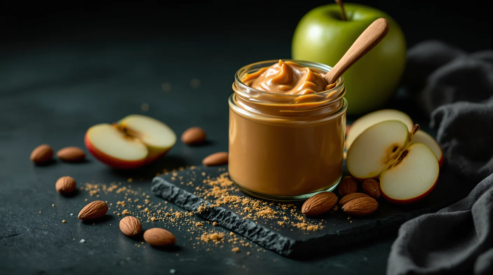
Homemade Cannabis-Infused Almond Butter
A homemade nut butter where the infused oil helps the blend turn creamy, and you set the dose per serving from the strength of your own oil.
Read More -
Cannabis Decarboxylation: What It Is and How to Decarb at Home
Raw flower is mostly THCA. Here's how gentle heat turns it into THC for edibles and oils, with the times, temperatures and home methods that work.
Read More -
Hot Honey Pepperoni Pizza with a Canna-Oil Crust
Sweet heat meets a canna-oil crust: pepperoni, jalapeño and a drizzle of hot honey. The dough makes two pizzas, so bake one and freeze the other.
Read More -
Which Strains Make You Laugh? The Science Behind Cannabis Giggles
THC, terpenes, company and setting all play a part in the cannabis giggles. Here's what research suggests, plus classic strains people link with laughter.
Read More -
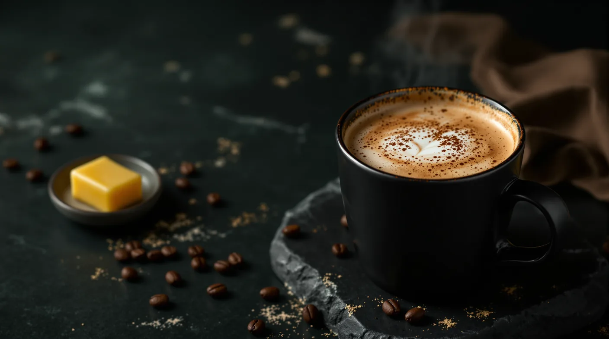
Bulletproof Cannabis Coffee, Dosed Your Way
A five-minute butter coffee where only part of the fat is infused, so you learn your dose before you scale up.
Read More -
Linalool in Cannabis: Aroma, Sources and What Research Says
Linalool is the floral, lavender-like terpene in some cannabis. Find out where it comes from, how strong the research is, and how to read a label for it.
Read More -
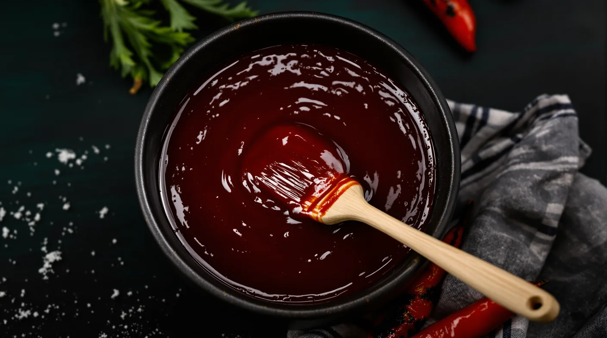
Cannabutter BBQ Sauce: Sweet, Smoky and Easy to Dose
A summer cookout sauce built around dosing: simmer the base, whisk in cannabutter at the end, divide the batch into 12 portions and serve one per person at the table.
Read More -
Indica Strains for Sleep: Profiles, Terpenes and Formats
A look at the indica-leaning strains, terpenes and formats adults reach for at night, the limits of the sleep research, and how to build a sensible evening routine.
Read More -
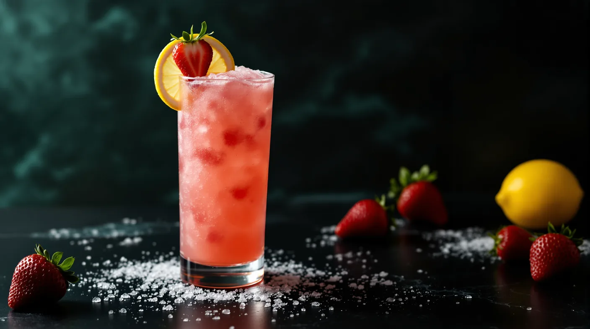
A THC Lemonade Slush: Frozen Strawberry Canna-nade
A two-glass strawberry lemonade slush with one trick: the tincture is blended into the fruit before the ice, so both servings carry the same dose.
Read More -
Does Cannabis Dehydrate You? Why Your Mouth Gets Dry
Cottonmouth is about saliva, not proof that your body is low on water. Here is why cannabis dries your mouth and how to stay comfortable.
Read More -
Cannabis-Infused Simple Syrup That Actually Infuses
THC barely dissolves in sugar water, so simmering flower in syrup leaves most of it behind. Use vegetable glycerin or a measured tincture instead, and do the math.
Read More -
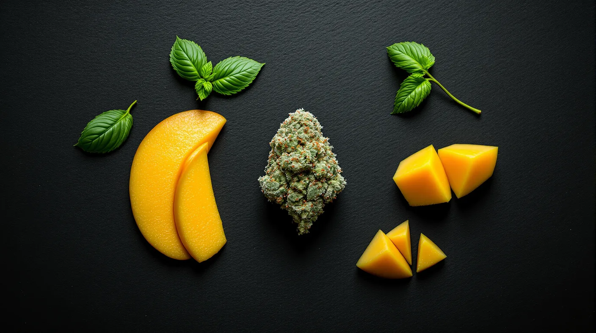
Ocimene: The Herbal, Floral Terpene in Cannabis
Ocimene ranks among the most widespread scent compounds in the plant world, and in cannabis it usually plays a supporting role. Learn its aroma, where it occurs and how to find it.
Read More -
No-Bake Cannabis Oatmeal Cookies with Tart Cherries and Pecans
Chewy chocolate-oat cookies made on the stovetop, with cannabutter stirred in after the boil and the batch shaped into exactly 12 so the math stays simple.
Read More -
Kush Cannabis: From the Hindu Kush Mountains to Today's Menus
Kush takes its name from the Hindu Kush mountains of Afghanistan and Pakistan. Here's how those plants shaped modern cannabis, what Kush usually smells like, and why the name isn't a promise.
Read More -
Crunchy Infused Granola Clusters with Hemp Hearts and Almonds
Crunchy oat, almond and hemp heart clusters with canna-oil standing in for part of the coconut oil. Measure it by the half cup, or bake it plain and dose each bowl.
Read More -
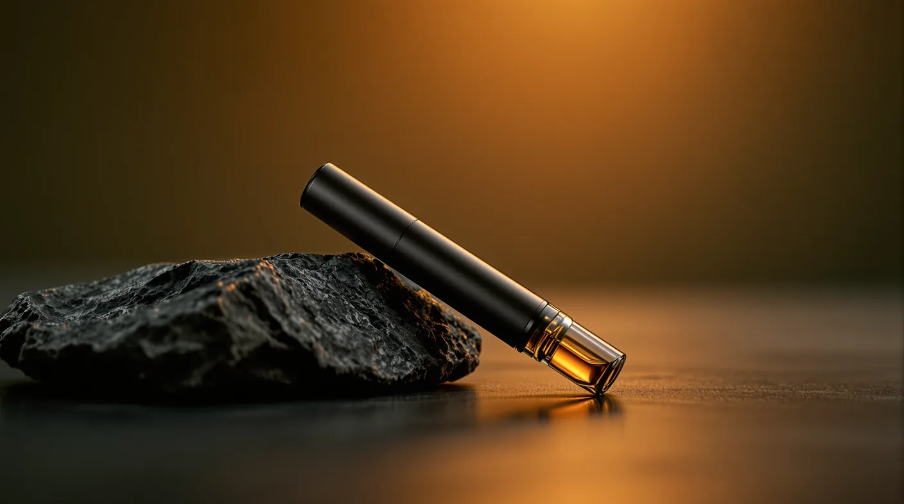
Cannabis Vape Pens: Anatomy, Heating and Everyday Use
A vape pen is a slim, battery-powered device that heats cannabis oil into vapor. Here's how the parts work, how to switch one on and how it differs from dry-herb and dab pens.
Read More -
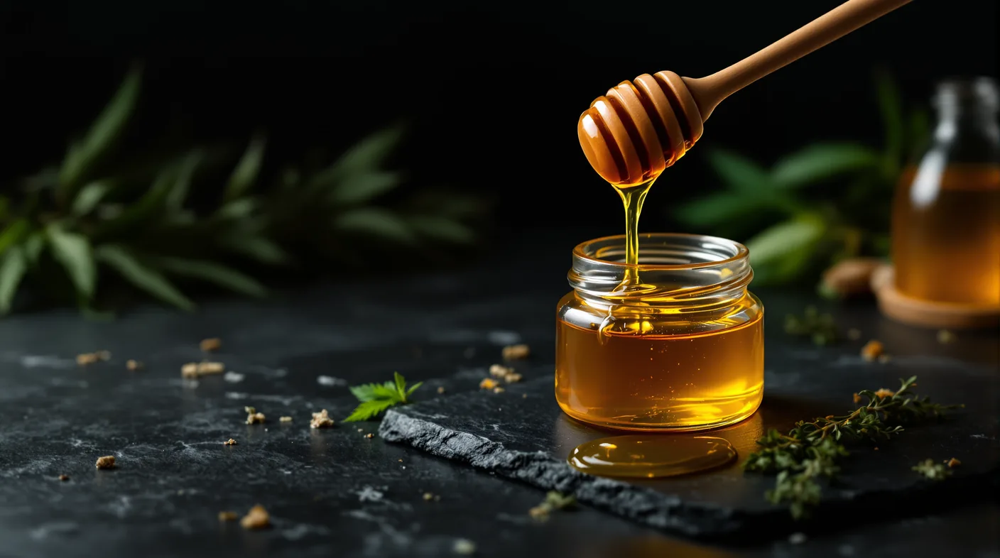
Canna-Honey: Infused Honey in About 20 Minutes
Turn the canna-coconut oil you already made into honey for tea, toast and sauces, with simple math for the dose in every spoonful.
Read More -
The Entourage Effect: How Cannabis Compounds May Work Together
The entourage effect is one of cannabis’s most repeated ideas and one of its least settled. Where it came from, what research shows, and how to read labels with it in mind.
Read More -
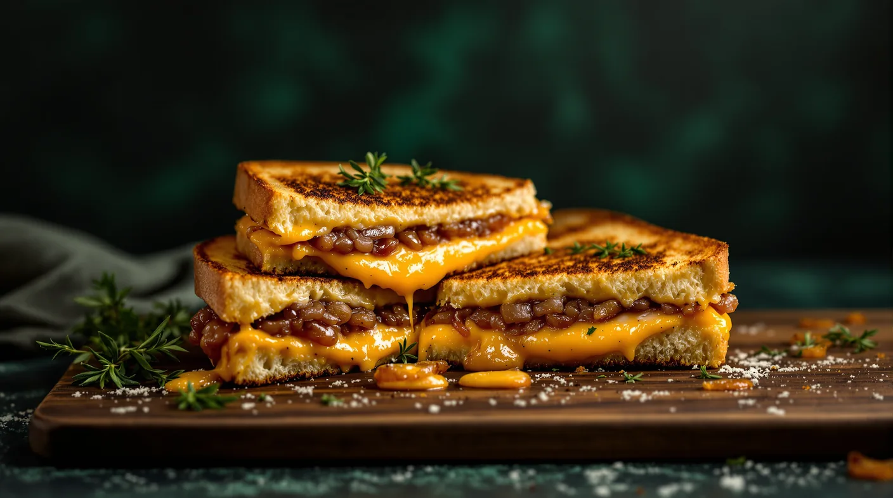
Herbed Cannabis Grilled Cheese, Dosed Through the Onions
Three melty cheeses on brioche, with herby onions that carry the cannabutter. Split the onions four ways and every sandwich gets an even dose.
Read More -
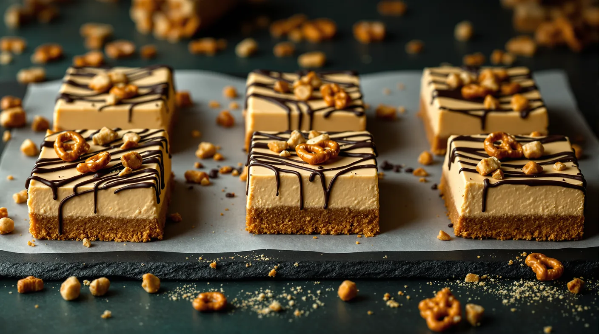
Peanut Butter Cheesecake Bars with a Cannabis Chocolate Drizzle
Salty-sweet bars on a peanut butter cookie crust, with a creamy cheesecake layer, pretzels and a canna-chocolate drizzle that splits evenly nine ways.
Read More -
Canna-Butter (Ghee or Butter, Water-Bath Method)
The base infusion for our recipes: ghee or butter infused in a sealed jar in a gentle water bath, with a worked potency example and safe storage.
Read More -
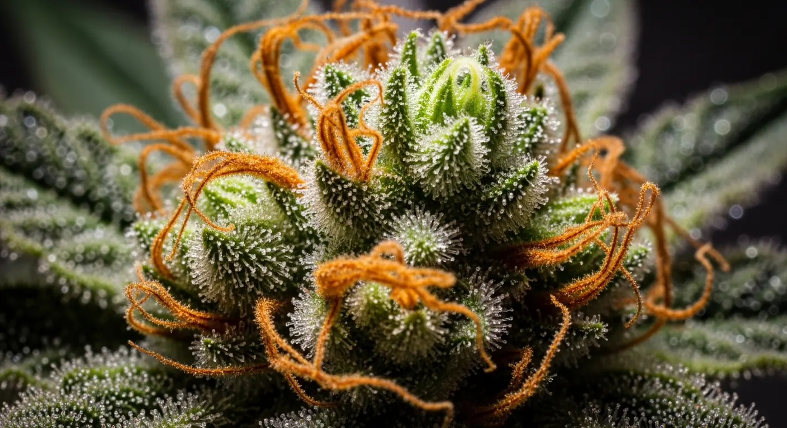
Understanding Terpenes: The Secret to Your High
THC isn't the whole story. Learn how terpenes shape the flavor, aroma, and specific effects of your favorite strains.
Read More -
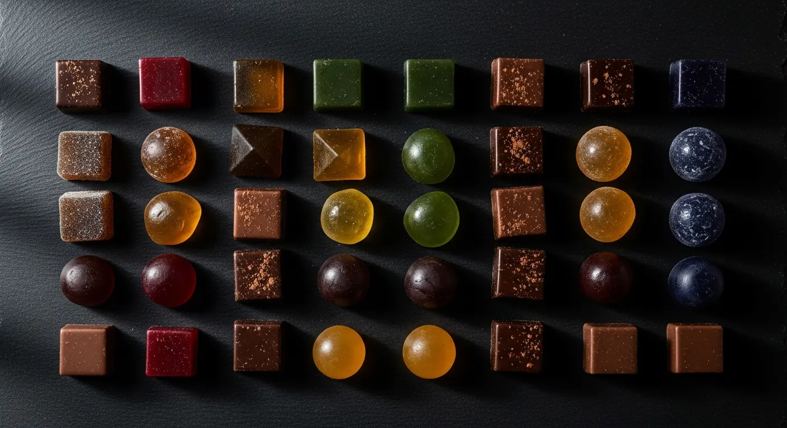
Edibles 101: Dosing for Beginners
Start low and go slow. A comprehensive guide to navigating edible dosages safely and enjoyably.
Read More -
Our Top Sativa Picks for Summer
Beat the heat with these energizing, uplifting strains perfect for outdoor activities and daytime use.
Read More -
Community Clean-Up Event Recap
Thank you to everyone who came out to help us clean up Irvington Park. See the photos and impact from our latest event.
Read More


No posts in this category yet.